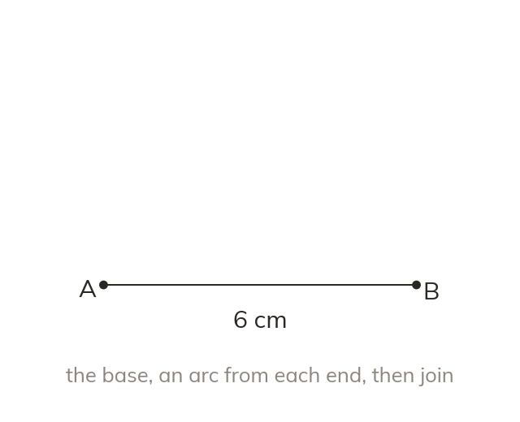
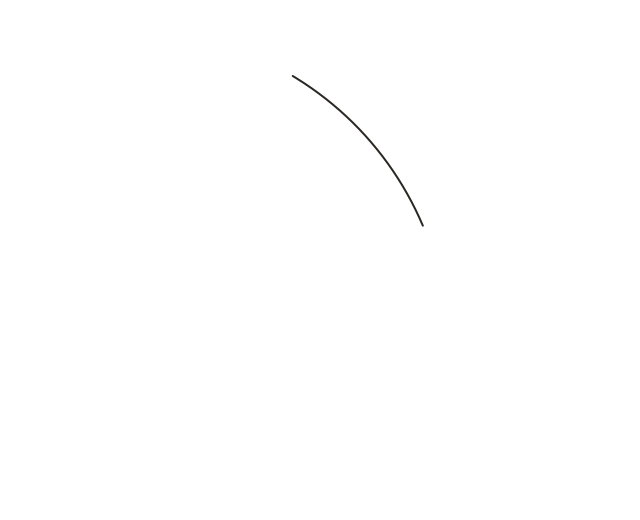
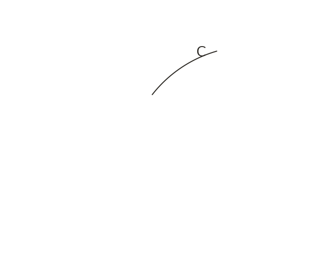
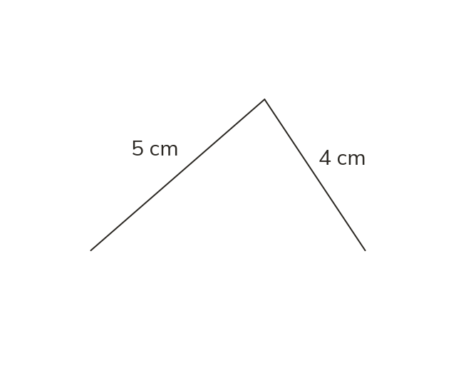

One side, two arcs, then join
Start with the base, drawn with a ruler. Draw an arc from each end, set to the other two lengths. The arcs cross at the third corner.
An accurate triangle starts from one side, drawn with a ruler as the base. Arcs set to the other two lengths, one from each end, cross at the third corner.Measure the base from zero. Set the compasses to the second length and draw an arc from A; set them to the third length and draw an arc from B. Join the crossing point to A and to B to finish the triangle. The arcs stay on the drawing as evidence of the method.